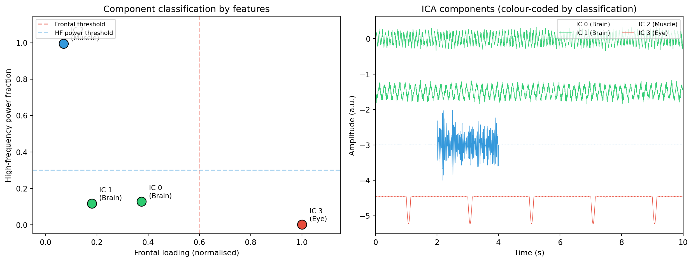

# Install mne-icalabel
# pip install mne-icalabel
# Or with conda
# conda install -c conda-forge mne-icalabelAutomated ICA labelling with ICLabel
artifacts
decomposition
automation
What ICLabel is, how it classifies ICA components into seven categories (brain, muscle, eye, heart, line noise, channel noise, other), using mne-icalabel in Python, interpreting confidence scores, and when to override automated labels.
What ICLabel does
Identifying ICA components by hand takes time. For a 64-channel recording with 60 components, you might spend 15-30 minutes inspecting topographies, time courses, and spectra before deciding which components to remove. ICLabel automates this process using a neural network that was trained on a large database of expert-labelled ICA components.
ICLabel was originally developed for EEGLAB (Pion-Tonachini et al., 2019) and has been ported to Python through the mne-icalabel package. Given the topography, power spectrum, and autocorrelation function of each component, it outputs a probability distribution over seven categories. You can then set a threshold (for example, “remove any component with more than 80% probability of being an eye artifact”) and apply it consistently across all your recordings.
The seven categories
ICLabel classifies each component into one of seven categories:
| Category | Description | Typical features |
|---|---|---|
| Brain | Neural activity | Focal, smooth topography; alpha/theta peaks in spectrum |
| Muscle | EMG from scalp, jaw, or neck muscles | Peripheral topography; high-frequency power (>20 Hz) |
| Eye | Blinks and eye movements | Frontal topography; low-frequency power (<5 Hz) |
| Heart | Cardiac artifact | Diffuse topography; regular ~1 Hz rhythm |
| Line noise | 50/60 Hz power line interference | Diffuse topography; sharp spectral peak at 50 or 60 Hz |
| Channel noise | Noise from a single bad electrode | Focal topography on one electrode; broadband noise |
| Other | Anything else | Catches components that do not fit the above categories |
Each component receives a probability for every category, and the probabilities sum to 1. For example, a component might be labelled as 92% eye, 5% brain, and 3% other. You use these probabilities to decide whether to keep or remove the component.
Installing mne-icalabel
The mne-icalabel package is not included with MNE-Python by default. You need to install it separately:
The package depends on PyTorch (for the neural network) and will install it automatically if it is not already present. This makes the installation larger than a typical MNE add-on.
Using ICLabel in your pipeline
The main function is label_components(), which takes a fitted ICA object and the raw data, runs the neural network, and returns labels and probability scores.
import mne
from mne.preprocessing import ICA
from mne_icalabel import label_components
# ── Set up and fit ICA ────────────────────────────────────────
raw = mne.io.read_raw_edf("recording.edf", preload=True)
raw.filter(l_freq=1.0, h_freq=100.0) # filter for ICA
raw.set_montage(mne.channels.make_standard_montage("standard_1020"))
ica = ICA(n_components=20, method="infomax",
fit_params=dict(extended=True), random_state=42)
ica.fit(raw)
# ── Run ICLabel ───────────────────────────────────────────────
ic_labels = label_components(raw, ica, method="iclabel")
# ic_labels is a dict with two keys:
# "labels": list of strings (the predicted category for each component)
# "y_pred_proba": array of shape (n_components, 7) with probabilities
print("Labels:", ic_labels["labels"])
print("Probabilities shape:", ic_labels["y_pred_proba"].shape)Interpreting the output
The labels list gives you the most likely category for each component (the one with the highest probability). The y_pred_proba array gives you the full probability distribution, which is more informative.
import numpy as np
# Category names (in the order used by ICLabel)
categories = ["brain", "muscle", "eye", "heart",
"line_noise", "chan_noise", "other"]
# Print labels with confidence scores
for i, (label, probs) in enumerate(
zip(ic_labels["labels"], ic_labels["y_pred_proba"])
):
confidence = probs.max() * 100
print(f"IC {i:2d}: {label:12s} ({confidence:.1f}% confidence)")Excluding components by threshold
Rather than removing every component labelled as non-brain, you can set a probability threshold. This gives you control over the trade-off between cleaning and signal preservation.
# Exclude components where P(non-brain) > 0.8
# This is a conservative threshold: only remove components that
# are clearly artifacts
exclude = []
for i, probs in enumerate(ic_labels["y_pred_proba"]):
brain_prob = probs[0] # brain is category 0
if brain_prob < 0.2: # less than 20% chance of being brain
exclude.append(i)
label = ic_labels["labels"][i]
print(f"Excluding IC {i}: {label} "
f"(brain probability = {brain_prob:.2f})")
ica.exclude = exclude
ica.apply(raw)A common approach is to exclude components where the probability of being any single artifact type exceeds a threshold (e.g., 80%). This is more nuanced than a simple brain-vs-not-brain split:
# Exclude components with > 80% probability for any artifact category
artifact_categories = [1, 2, 3, 4, 5] # muscle, eye, heart, line, chan_noise
threshold = 0.80
exclude = []
for i, probs in enumerate(ic_labels["y_pred_proba"]):
for cat_idx in artifact_categories:
if probs[cat_idx] > threshold:
exclude.append(i)
print(f"Excluding IC {i}: {categories[cat_idx]} "
f"(p = {probs[cat_idx]:.2f})")
break # no need to check other categories
ica.exclude = excludeWhen to override automated labels
ICLabel is good, but it is not perfect. Here are situations where you should inspect the results and potentially override the automated labels:
Low-confidence classifications. When the highest probability is below 50%, the model is uncertain. Look at these components manually. A component labelled as “brain” with 45% confidence and “muscle” with 40% confidence could go either way.
Unusual recording setups. ICLabel was trained on data from standard EEG systems with common montages. If your recording uses a non-standard montage, unusual electrode placement, or very few channels, the neural network may produce unreliable labels.
Mixed components. Sometimes a component captures a mixture of brain and artifact signals (this happens when ICA does not fully separate the sources). These components may receive moderate probabilities across multiple categories. Visual inspection is the only way to decide.
Components labelled “other”. The “other” category is a catch-all. Components labelled as “other” could be brain activity that the model does not recognise, or they could be an artifact type that does not fit the standard categories. Always inspect “other” components.
Very few components removed. If ICLabel flags zero or one component as an artifact in a recording that clearly has blinks and other artifacts, the model may be underperforming on your data. Check manually.
A complete ICLabel workflow
import mne
from mne.preprocessing import ICA
from mne_icalabel import label_components
# ── Load and prepare data ─────────────────────────────────────
raw = mne.io.read_raw_edf("recording.edf", preload=True)
raw.set_montage(mne.channels.make_standard_montage("standard_1020"),
on_missing="warn")
# High-pass filter for ICA (keep a copy at lower cutoff for analysis)
raw_for_ica = raw.copy().filter(l_freq=1.0, h_freq=100.0)
# ── Fit ICA ───────────────────────────────────────────────────
ica = ICA(n_components=0.99, method="infomax",
fit_params=dict(extended=True), random_state=42)
ica.fit(raw_for_ica)
# ── Run ICLabel ───────────────────────────────────────────────
ic_labels = label_components(raw_for_ica, ica, method="iclabel")
# ── Print a summary ───────────────────────────────────────────
categories = ["brain", "muscle", "eye", "heart",
"line_noise", "chan_noise", "other"]
for i, (label, probs) in enumerate(
zip(ic_labels["labels"], ic_labels["y_pred_proba"])
):
top_prob = probs.max() * 100
print(f"IC {i:2d}: {label:12s} ({top_prob:5.1f}%)")
# ── Exclude artifact components (conservative threshold) ──────
exclude = []
for i, probs in enumerate(ic_labels["y_pred_proba"]):
brain_prob = probs[0]
if brain_prob < 0.2:
exclude.append(i)
ica.exclude = exclude
print(f"\nExcluding {len(exclude)} components: {exclude}")
# ── Verify before applying ────────────────────────────────────
# Always spot-check a few excluded components
ica.plot_properties(raw_for_ica, picks=exclude[:4])
# ── Apply to the original data ────────────────────────────────
ica.apply(raw)Working example: the concept behind component classification
ICLabel’s neural network requires pre-trained weights that are specific to the model architecture and training data, so it cannot be replicated from scratch with simulated data. However, we can demonstrate the underlying concept: classifying components based on measurable features like spatial distribution and spectral content.
The code below fits ICA on simulated data with blink and muscle artifacts, then uses simple heuristics (frontal loading for blinks, high-frequency power for muscle) to classify each component. This is a simplified version of what ICLabel does with a neural network.
import numpy as np
import matplotlib.pyplot as plt
from sklearn.decomposition import FastICA
rng = np.random.default_rng(42)
# ── Simulation parameters ──────────────────────────────────────
n_channels = 8
sfreq = 256
duration = 10
n_samples = sfreq * duration
times = np.arange(n_samples) / sfreq
channel_names = ["Fp1", "Fp2", "F3", "F4", "C3", "C4", "O1", "O2"]
# ── Source signals ─────────────────────────────────────────────
# Brain source 1: alpha oscillation
alpha = np.sin(2 * np.pi * 10 * times) + 0.3 * rng.standard_normal(n_samples)
# Brain source 2: theta oscillation
theta = 0.7 * np.sin(2 * np.pi * 6 * times) + 0.2 * rng.standard_normal(n_samples)
# Artifact 1: blink (low frequency, frontal)
blink = np.zeros(n_samples)
for bt in [1.0, 3.0, 5.0, 7.0, 9.0]:
idx = int(bt * sfreq)
width = int(0.15 * sfreq)
if idx + width < n_samples:
t_b = np.arange(width) / sfreq
blink[idx:idx + width] = 5 * np.sin(np.pi * t_b / (width / sfreq))
# Artifact 2: muscle (high frequency, peripheral)
muscle = np.zeros(n_samples)
# Band-limited high-frequency noise burst
burst_start = int(2.0 * sfreq)
burst_end = int(4.0 * sfreq)
burst_len = burst_end - burst_start
raw_noise = rng.standard_normal(burst_len)
freqs_fft = np.fft.rfftfreq(burst_len, d=1/sfreq)
spectrum = np.fft.rfft(raw_noise)
mask = (freqs_fft >= 25) & (freqs_fft <= 50)
spectrum[~mask] = 0
muscle[burst_start:burst_end] = 3 * np.fft.irfft(spectrum, n=burst_len)
# ── Mixing matrix ──────────────────────────────────────────────
mixing = np.array([
[0.4, 0.3, 1.0, 0.1], # Fp1: strong blink
[0.4, 0.3, 0.95, 0.1], # Fp2: strong blink
[0.6, 0.5, 0.2, 0.3], # F3
[0.6, 0.5, 0.15, 0.3], # F4
[0.8, 0.4, 0.03, 0.2], # C3
[0.8, 0.4, 0.03, 0.2], # C4
[1.0, 0.2, 0.01, 0.8], # O1: strong muscle (temporal-like)
[1.0, 0.2, 0.01, 0.9], # O2: strong muscle
])
sources = np.vstack([alpha, theta, blink, muscle])
data = mixing @ sources
data *= 30e-6 / data.std()
# ── Fit ICA ────────────────────────────────────────────────────
ica = FastICA(n_components=4, random_state=42, max_iter=1000)
components = ica.fit_transform(data.T).T
ica_mixing = ica.mixing_
# ── Feature extraction ─────────────────────────────────────────
# Feature 1: mean absolute frontal loading (Fp1, Fp2)
frontal_loading = np.abs(ica_mixing[:2, :]).mean(axis=0)
frontal_loading /= frontal_loading.max() # normalise to [0, 1]
# Feature 2: fraction of power above 20 Hz
hf_power_frac = np.zeros(4)
for i in range(4):
freqs = np.fft.rfftfreq(n_samples, d=1/sfreq)
psd = np.abs(np.fft.rfft(components[i]))**2
total_power = psd.sum()
hf_mask = freqs >= 20
hf_power_frac[i] = psd[hf_mask].sum() / total_power
# ── Classification ─────────────────────────────────────────────
labels = []
for i in range(4):
if frontal_loading[i] > 0.6:
labels.append("Eye")
elif hf_power_frac[i] > 0.3:
labels.append("Muscle")
else:
labels.append("Brain")
for i in range(4):
print(f"IC {i}: frontal={frontal_loading[i]:.2f}, "
f"HF={hf_power_frac[i]:.2f} -> {labels[i]}")
# ── Visualisation ──────────────────────────────────────────────
fig, axes = plt.subplots(1, 2, figsize=(13, 5))
# Left: scatter plot of features
ax = axes[0]
colour_map = {"Brain": "#2ecc71", "Eye": "#e74c3c", "Muscle": "#3498db"}
for i in range(4):
ax.scatter(frontal_loading[i], hf_power_frac[i],
s=150, c=colour_map[labels[i]], edgecolors="black",
zorder=5)
ax.annotate(f"IC {i}\n({labels[i]})",
(frontal_loading[i], hf_power_frac[i]),
textcoords="offset points", xytext=(10, 5), fontsize=9)
# Decision boundaries (simplified)
ax.axvline(0.6, color="#e74c3c", linestyle="--", alpha=0.4,
label="Frontal threshold")
ax.axhline(0.3, color="#3498db", linestyle="--", alpha=0.4,
label="HF power threshold")
ax.set_xlabel("Frontal loading (normalised)")
ax.set_ylabel("High-frequency power fraction")
ax.set_title("Component classification by features")
ax.legend(loc="upper left", fontsize=8)
ax.set_xlim(-0.05, 1.15)
ax.set_ylim(-0.05, max(hf_power_frac) + 0.15)
# Right: component time courses with labels
ax = axes[1]
offset = 0
for i in range(4):
trace = components[i] / np.max(np.abs(components)) + offset
colour = colour_map[labels[i]]
ax.plot(times, trace, lw=0.6, color=colour,
label=f"IC {i} ({labels[i]})")
offset -= 1.5
ax.set_xlabel("Time (s)")
ax.set_ylabel("Amplitude (a.u.)")
ax.set_title("ICA components (colour-coded by classification)")
ax.legend(loc="upper right", fontsize=8, ncol=2)
ax.set_xlim(0, duration)
plt.tight_layout()
plt.show()IC 0: frontal=0.37, HF=0.13 -> Brain
IC 1: frontal=0.18, HF=0.12 -> Brain
IC 2: frontal=0.07, HF=0.99 -> Muscle
IC 3: frontal=1.00, HF=0.00 -> Eye
The scatter plot on the left shows each component positioned by its two features: frontal loading (how strongly it projects to Fp1 and Fp2) and high-frequency power fraction (the proportion of spectral power above 20 Hz). The blink component has high frontal loading but low high-frequency power. The muscle component has low frontal loading but high high-frequency power. The two brain components cluster in the lower-left corner, with low values on both features.
ICLabel uses the same logic but with a neural network that considers many more features (the full topography map, the complete power spectrum, and the autocorrelation function) and was trained on thousands of expert-labelled components. The thresholds are learned from data rather than set by hand.
Key takeaways
- ICLabel is a neural network that classifies ICA components into seven categories: brain, muscle, eye, heart, line noise, channel noise, and other.
- Install it with
pip install mne-icalabeland uselabel_components(raw, ica, method="iclabel")to get labels and probability scores. - Each component receives a probability distribution over the seven categories. Use these probabilities to set a threshold for exclusion (e.g., remove components with less than 20% brain probability).
- A conservative threshold removes only clear artifacts. An aggressive threshold removes more components but risks removing brain signal too. Start conservative and adjust based on your data.
- Always verify the automated labels, especially for low-confidence classifications, components labelled “other”, and recordings with unusual montages or few channels.
- ICLabel works best with standard EEG montages and a reasonable number of channels (32 or more). With fewer channels or non-standard setups, manual inspection becomes more important.
- The underlying principle is feature-based classification: blink components have high frontal loading and low-frequency power, muscle components have peripheral topography and high-frequency power, and so on. ICLabel learns these patterns from labelled training data.